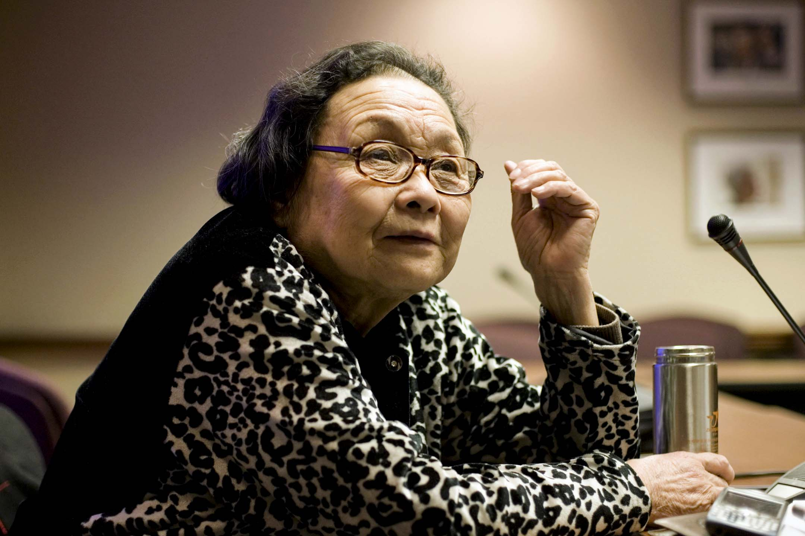
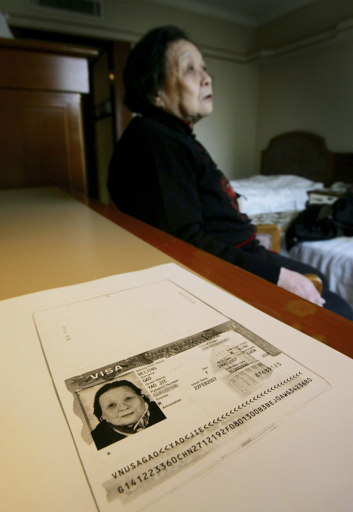

高耀潔：我一生幾次逃難｜端傳媒 Initium Media
Table of Contents
「年老多病的身體，多年來靠藥物維持生存，只有埋頭整理書本，來度過我人生最後的時光。」

Figure 1: 愛滋病防治活動家，被譽為「中國防愛第一人」、河南中醫學院退休教授高耀潔。圖片拍攝於2007年。攝：Joshua Roberts/Reuters/達志影像
刊登於 2020-09-05
【編者按】本文由高耀潔醫生寫於今年春季，近期由友人轉交端傳媒刊出。
我已九十三歲了，多次跑反、逃難，伴隨着我的人生，從山東逃到河南，在河南又幾度逃難，渡過了我人生艱苦的青壯年時代。逃難在河南並沒有停止下來， 直八十二歲、為抗擊艾滋病工作，被迫逃出國門，孤身寄居美國紐約十多年，時下又遇到新冠肺炎疫情爆發，美國是全世界新冠肺炎重疫區，本人年老多病無處可 逃，如之奈何？
一、逃八路軍災難
1927年12月我出生於山東曹縣，深閨豪門的富裕家庭，獨莊獨寨，有田地70多畝，是魯西南出名的大富戶，見曹縣誌。我是母親生育的第一胎，她是 續絃，前房母親病故，留有兩個姐姐，高家很盼望我母親生個男孩，我又是個女孩，在這個重男輕女的封建社會裏，很失望。為了讓我母親再生男孩，停止了我的母 奶餵養，僱奶孃餵養，造成我終生慢性腸胃病，體形消瘦，體力差於同齡人，倖進入醫學、學習醫學知識、從事醫療工作，獲得長壽。
三十年代，八路軍已進入我們的家鄉，1939年3月，八路軍冀魯豫邊區支隊隊長楊得志、政委崔田民、二大隊隊長覃健等率領一支部隊、進入高新莊掄 劫，拘留我家三人，包括我父親、我半身不遂中風不語的二伯父。他的罪名是「日本漢奸」，那時日軍還沒有佔領曹縣，二伯生病已年餘，哪來的漢奸罪名？為了要 錢，對他們三人嚴刑拷打，往鼻孔口腔灌辣婌水，折騰了半個月，高家拿出30萬現洋贖身費放人。同時把高家所有衣物、傢俱、糧食等等，掄劫已空，連吃飯米 粒，一匙沒留，無可奈何，我父親攜全家逃亡，到柳河鎮，九女集村，這是第一次跑反，那時我11歲。
二、逃日本侵華戰爭
九女集是一個大集鎮，五天一次集會之外，在大道上還設有商鋪多處，鎮後方右廟宇，每逢集會時日，外地香客前來朝拜，集鎮日非常熱鬧。全鎮有幾戶，駐有國民黨第七路軍，隷屬國民黨部隊，經費靠國家頒發，他們不搶劫，全鎮相對安定。
我家在鎮中租賃一處小院，三座房，上房三間我父母和小弟弟們住，我和兩個姐姐、兩個妹妹，五個人住東屋三間，西屋三間做飯，放一些雜物。在那裏住了幾個月，終日提心吊膽，不敢外出，怕外人知道我們是高新莊的逃大戶，遭遇到外面的掄劫。
有一天我們全家正在院子裏吃午飯，我父親匆匆忙忙走進來，對我們說：日本鬼子到了寨外，趕快走……我母親抱着我小弟弟拉着我大弟弟，還有我 姊妹五個走出住處。這時街上十分混亂，人們都向東邊跑，我們被裹在人流中出了東門，這時南門那邊突然爆發激烈的槍聲，七路軍與日本鬼子交火了，阻止日本鬼 子前進，掩護老百姓撤退。東門外更亂了，人們出東門向北跑，我母親腳小拉着兩個弟弟走不動了。我父親領着全家走過約一米深的土壕，坐小樹林裏休息。這裏與 大路只隔一塊約有十五米的高梁地，我們可以很清楚看到日本鬼子在大地上行進，約有三四百人，兩輛炮車，向城武縣方向行進，準備進攻城武縣。夕陽西下時，聽 到城武縣方向炮聲隆隆，並可以看到幾處灰黃色煙柱。九女集平靜了，傍晚我們隨着逃難人群回到鎮上的家。
三、逃往河南開封
我父親認為社會動亂短時間不會平息，必須遠離故鄉，到抗日後方四川生活，我母親要回高新莊，吵吵嚷嚷多日，終於折中，逃亡到河南省會開封市。那裏有 幾家親戚，特別是呂家，是我父親第三任死去的妻子的家鄉，有六位兄長在開封定居，平時期還有來往，於是找呂家，聯繫決定遷居開封。
1939年6月或7月的一天，我們全家從曹縣天主堂乘馬車離開，中午到了柳河集火車站，進入侯車室旁一間空房裏。裏面很骯髒，地上有幾片破席子我們 全家坐下來，一會來了四個民警撿查行李，我父親應付後，我們全家很快地上了往東開的火車，在火車上我第一次近距離看見兩個日本兵。
下午日落西山時刻，火車到達開封南關火車站。當時開封是河南的省會，我第一次看到那麼大的棚子，棚頂全是花玻璃，兩個月台，四條鐵路。我們通過檢票 口，很快離開火車站，全家帶行李進入家廟後街的租房裏，據說是呂家舅們給安排的。這時期內與呂家六位舅舅經常來往，兩個月後搬到南聚奎巷，那裏臭蟲很多， 影響睡覺，一個月後，又搬到侯家胡同。
當年冬季又遷居北大街，在北大街井胡同口開個雜貨鋪，當時社會很亂，漢奸、無賴、流氓、買東西記賬，永遠不還錢，賠錢太多，關了雜貨鋪。1943年秋季，買了遊梁市前街31號獨院，安定下來，以開磨房維持全家生活。
四、南逃學生，流亡生活
1948年春季考入開封女子師範，屬中等專科學校，是培育小學教師的，那時我想將來能當小學教師，生活可以自立，已滿意了。開女師管理正規，學生每個月共八十多斤麥子，一塊銀元，每月口糧吃不完，我送回家，生活學習一切滿意。
第一學期將要結束，八路軍攻打開封，女子師範學校是一槍戰重點，同學們都藏在宿舍樓的地下室裏，槍、彈像下雨一般，當時開女子師的傷亡情況不得而 知。只見到開封城牆內外躺滿了陣亡將士的屍體，死屍橫遍城牆內外野地，臭氣熏天，慘不忍睹。真見，孟子云：「爭城以戰，殺人盈城，率土地而食人肉」，三天 後八路軍在開封搶劫財物完畢之後，自動撤退了。
開封各種學校奉河南省政府和教育廳之命準備遷往外地，在校生紛紛報名，因怕再來了戰爭。全體同學隨學校南遷，我父親用一輛破自行車給我送上一件棉被 子，到了學校門口，他說：「誰也不可能知道自己是死是活，你安心跟學校走吧！」我沒有想到，我和父親已是永別了。晚上全體同學在王少明校長和十幾位教師的 領導下，乘了開往南京市的火車，在火車上，同學們出現各種情緒：有人流淚，有人昏昏欲睡，有人唱悲歌，大家總在前思後想，誰也難以預料未來的日子。時至今 日，流落的日子不知後果如何？
兩天後火車停在江蘇南京市江北下關，這是一個碼頭，大家等候木船擺渡分批（以班為單位）到南京市。這時同學都席地而卧，躺在水泥地上，幸虧我父親送我一棉被，我少遭濕冷。同學南京市聚集之後，全校赴浙江嘉興，那是我們學校遷校的目的地。
我校遷址在嘉興市池灣鎮，三年級和二年級住西真寺，我們一年級住池灣繭場，生活靠當地政府和民間人士捐助糧食（質量差）。天天吃大米稀飯，沒有炒 菜，在大米稀飯中做成鹹的，加入少量油鹽和各種不同樣的蔬菜葉。同學們在閒的時間裏，到田間或小河旁找野蒜，或其他野菜，把這些能吃的東西取回住處，把野 蒜等洗淨，用鹽拌後，大家分着吃。當時我是一年級的伙委，我對這個問題很清楚。
隨學校來的老師很少，我們在池灣鎮繭場，房子很大，兩個年級兩班一起上課。有一間在上物理課，另一間在上化學課。有時候，一邊在上體育，一邊在上健 美操。有的同學很煩躁，鬧情緒，鬧不團結。她們因為想家，常常哭泣。我也很難過，也跟着流淚，後來就變成嚎啕大哭。繭場只有教師殷進德先生夫婦住在那裏管 理我們，他們還帶着三個孩子。同學白天在繭場底下上課，晚上去二層睡覺。在這個時期，有辦法的同學都走了，我和榆惠璋、時榮華同學等四個人，轉往嵩雲中學 高中二年下學期。這個學校是隨當時的河南政府行動的，不久遷往四川萬縣，住在輔城法學院。這時我們終於能安心上課了，老師都是當地請來的，有時他們說的四 川話我們不懂。榆惠璋、時榮華的父親都是河南省政府的官員，他認為形勢不好，把女兒帶往台灣。
我們上了一學期課，1949年底，八路軍佔領四川，我到了山東同鄉萬縣紅十字會醫院院長沈丕模家住，我去看病認識的沈院長，因此拉上關係，他同我二 伯父高聖君也認識。後來聽傳說50年代，院長沈丕模當過萬縣衞生局局長，反右派時他被劃為右派致死。當時沈家生活富裕，有三個孩子都在上學，他的太太比較 年輕，不工作相夫教子。1950年元月沈太太回山東濟南探親，我隨她回到河南開封家中。

Figure 2: 2007年2月23日，高耀潔在北京的一家旅館接受訪問，桌上擺放了美國簽證的複印件。
五、風燭殘年，出走海外
2009年3月下旬的一天，我接到法國駐華大使館打來的電話，告訴我說法國給我發一年一度的「傑出婦女獎」，我沒怎麼聽清楚，便說：「4月中旬，我 要到上海參加《南方週末》的頒獎典禮，到時我們可以當面詳細談。」對方回答說好。不巧，《南方週末》主辦的這個「中國夢踐行者」致敬盛典，時間推遲，我也 就沒去成上海。
無奈走出國門
到了5月6日上午9時許，我突然覺得氣氛不對。我的電話又出了故障，打不出去也打不進來，電腦也出了問題。我去小區門外超市買中午的食物，發現小區 內有不少陌生人，他們目光異常，使我感到又出事了，很像2007年2月我赴美國領獎前夕的情況了。我中午飯也沒來得及吃，假牙也沒來得及帶，兩手空空，只 取出電腦的硬盤（裏面有三本書稿，我不能放棄）。我把硬盤放在內衣兜裏，匆匆地從小區後門離開了家。我這次外出，完全是為了艾滋病人用鮮血和生命換來的事 件，不能白白地費去。不然2007年3月，我赴美國領取「生命之音」獎，很多美國要人、權貴出面留我，居住美國安度晚年，我沒有接受，仍堅持回國了，豈料 有近二年過着如此的生活呢？
我這個風燭殘年的老人，非萬不得已，不會隻身流浪在外地，這次盲目外出，不知所從，只是為了把這些資料（艾滋病疫情的三本書）留給後人。蒼蒼大地，茫茫人海，何處是我的歸宿？
我80多歲行走蹣跚，多麼困難，離開家到成都，最後到廣州。住在一個農村，天天修改書稿，此處離大學城很近，有不少志願者和大學生來幫助我，他們每 天都有兩到三人協助我為書稿打字，這給了我莫大的安慰。但是這時我多次流淚，不斷思考，我並不是不想回家，是因揭露艾滋病疫情避的我不能回家。
後來我只能繼續為艾滋弱勢群體說話，救助他們，往日的防艾工作，一切活動都是我自費付出，我不敢收任何人給我的錢，即便情面難卻時收下錢之後，也要 改日再把錢還他。比如北京愛知行萬延海2000年8月的一天，來鄭州給我送錢，他兩次給我兩萬八千元，到2003年冬我從郵局寄給他3萬，多給他2千元作 為2年來的利息。我為艾滋病受害者吶喊，是一個醫生的職責，為什麼要對我進行各種打壓、造謠和詆譭？為什麼對我的工作進行阻擾？甚至在農村疫區懸賞500 元舉報我，阻止我進入艾滋村，我往貧困地區給貧病民眾郵寄書籍、衣物，經常會大量、多次的丟失。我的電話經常打不通，我出門經常有人跟蹤。如此種種，令人 難忍！
我想來想去，我不知哭了多少次！我權衡了利與弊，我想本人若無聲無息地死去，我手裏的資料便石沉大海，而且外界一無所知。最後我決定出走。我託香港 的朋友幫我聯絡，請他往國外給我2007年認識的朋友打了個電話，說我已經離開了家，無處可歸，需要出國。7月中旬與美國有關人土取得聯繫，7月下旬開始 辦外出手續，有朋友轉託在美國的華人組織，請他們派人來接我出國。
被迫定居美國
離開國內時有大學生送行，臨上飛機前，其中一位大學生送我到機場入口處，交給我一個字條，他說：「奶奶，你到飛機上再看。」我將字條拍下，以資留 念。8月7日離開了廣州白雲機場，途中經三次轉機，8日抵達目的地。我的心中一塊巨石落了地，接納我的是山東同鄉，住在他們家裏，他們全家都對我的生活照 顧得不錯，住了半年多，我非常感謝他們 。
2010年3月，我被哥倫比亞大學聘為訪問學者，由外地搬往紐約，住在一所公寓裏，我深居簡出，要盡心盡力，把我的書稿編寫好。
自古人生誰無死？我不怕死，我怕的是手頭這些關於中國艾滋疫情的真實資料被湮沒。我這次外出，是為了不讓艾滋病人用鮮血和生命換來的病例白費，之後三本書全出版了，還修訂增版了《高潔的靈魂》一書。
自2009年走出國門，十年多了！骨肉親人或陰陽相隔或天各一方！身處異國他鄉，生活不慣，言語不通，這裏來很多中國人，來歷各種各樣，無人知曉， 因此我處境也相當複雜，漫漫長夜間！可謂萬里西風夜正長，斷腸人在天涯！年老多病的身體，多年來靠藥物維持生存，耳聾眼花，乏力嗜睡，行走蹣跚，精力、體 力均不支，所以我無力去參加他們的社會活動，只有埋頭整理書本，來度過我人生最後的時光。可怕的是近兩年多，我因肺部疾病卧床吸氧氣，但仍想盡力給後人留 下我一生逃難的知識。明知來日無多，2019年除夕夜時，我想念自己的孩子，她們畢竟是我身上掉下的肉，寫了一首詩：
《思念》
我的夜晚是你的白天，
當我思念時你們進入睡眠。
九十二歲的我思念無定時間，
回想着你們幼年的小臉，
活潑無暇的行動，
奶聲奶氣的呼喊，
這是當年的樂景，
如今留在夢幻之間。
(2020年春 寫於紐約)
本刊載內容版權為端傳媒或相關單位所有，未經端傳媒編輯部授權，請勿轉載或複製，否則即為侵權。